01 · 课前准备
第一次打开，先用两台设备试一试
- 按安装部署指南装好支点课堂，打开教师端，按页面提示设置管理密码。学生进课堂时用互动码。
- 让教师电脑和一台学生设备连接同一校园网络。在「课堂管理」确认「局域网访问已开放」。
- 第一次试课可以只用一个演示班级、一份学习单。先走通加入、作答、提交和查看结果，再加入其他模块。
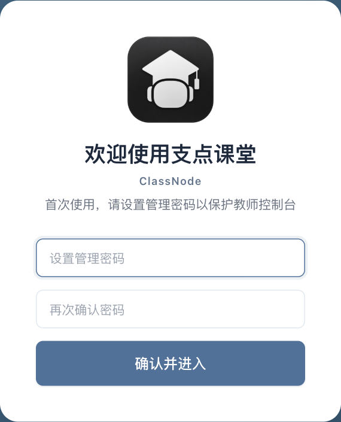
图 1 首次进入教师端时，在这张卡片设置并确认管理密码。
学习单
做练习、填表、收集想法，老师可以看到提交情况。
智能学伴
学生向老师选定的 AI 学伴提问，围绕任务对话。
02 · 课前准备
准备班级和学生名单
入口 · 班级管理
- 点「创建班级」，填写班名，例如「五年级一班」。
- 选中班级，在「学生列表」逐个添加，或点「粘贴名单」批量加入。导入后核对姓名、学号和人数，避免学生上课时认错身份。
- 要做小组活动时，切到「分组管理」，输入组名，添加小组，再把学生拖进对应小组。个人练习可以直接使用学生名单。
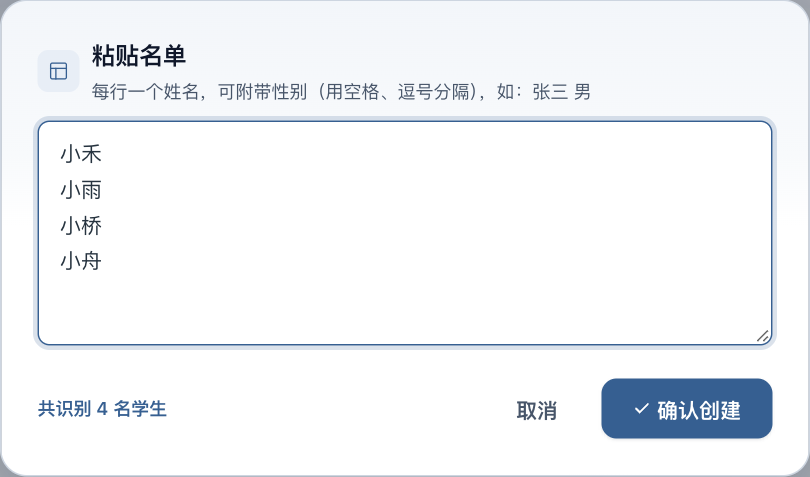
图 2 每行写一名学生。核对下方识别人数后，再点「确认创建」。
03 · 课前准备
制作一份学生能直接做的学习单
入口 · 学习单 → 新建学习单
- 给学习单起个名字，例如「校园植物观察单」。点顶栏「设置」，选择适用年级和学科。
- 先添加主题，再在主题下添加任务。比如主题叫「记录我的观察」，下面放一个天气填空和一个观察记录任务。
- 用「填空」在光标处插空。需要表格时点「表格」，选好行列数。单元格里既能写说明，也能插一个或多个空。选中表格内的文字，可用顶部工具栏设样式。
- 点题面上的横线，在「填空设置」选择手工填写、选词或语音作答，在「答案与评价」设置这一空怎么处理。横线上方的箭头可依次切换前后两个空。
- 点「预览」，像学生一样试做一次，检查题目、选词和提交提示。确认后点顶栏「保存」，保存整份学习单。
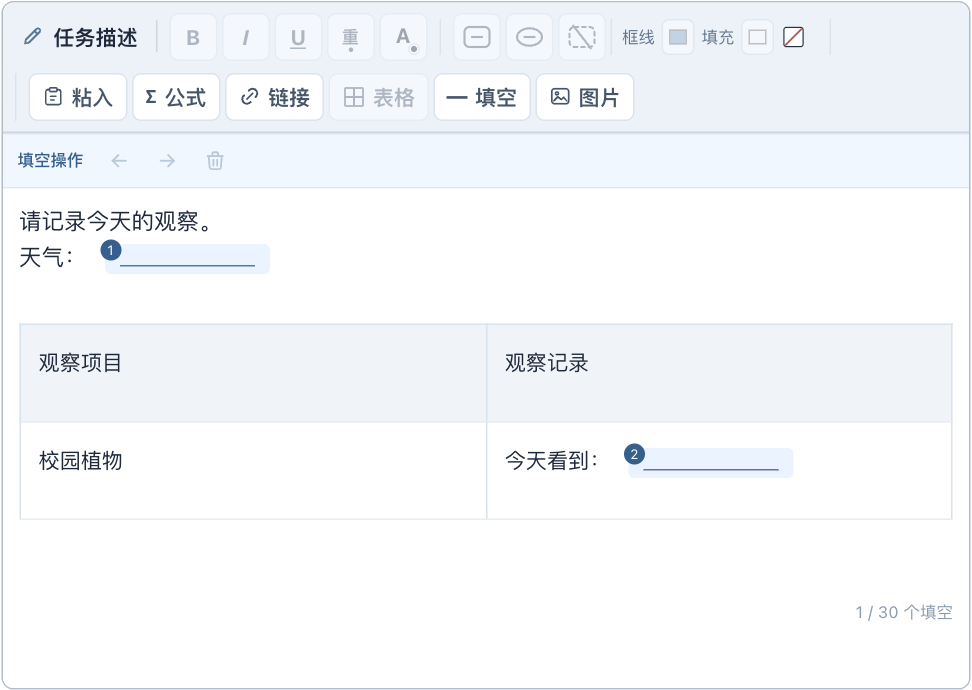
图 3 「表格」在顶部工具栏。题干和表格中的横线可以分别选中。
按教学目的选用途
- 练习判分
- 有明确答案，例如填「晴」或选「叶片」。填好标准答案，提交后系统判分。
- 调查收集
- 想了解学生看到了什么、喜欢哪项活动。收集答案即可。
- 表达评价
- 希望学生说理由、写观察或展示作品。选好分析智能体，并写明看重什么，例如「说出一处具体变化，并用观察记录说明」。需要计分时写清给分条件。
展开查看 · 填空的选词、宽度和奖励
- 编辑多个选词时，用半角竖线
| 隔开。长词要在指定位置换行，可以按 Shift + Enter 插入换行标记。共用选词可以一键打乱。
- 填空宽度可选「自动」或「固定」。固定宽度适合想把几个空排齐的题目，长答案会在框内换行。
- 「逐空计分」适合答对几空就给几空的分。「整题计分」适合全部参与判分的空答对后发放一次奖励。调查收集的空只收集内容。
展开查看 · 其他任务形式
- 选择题可打开「多选」。判断题适合判断正误。排序、连线和归类分别用于排步骤、配对和分类。
- 表达题可让学生打字、手写、上传照片或录音。绘图题可选基础绘图、数学作图、思维导图或流程图，也可用照片提交作品。
- 要为表达题定制观点云，在「任务用途」下填写「观点提炼要求」，例如「从学生作答中提炼 5～7 个关键词或短语，关注实事求是和敢问敢辩」。保存后生成或更新班级分析，系统会按实际作答归纳。
- 想按进度带全班做题，在「设置」选择「教师控制开放」。想让学生交完再做下一项，可选按主题或按任务解锁。
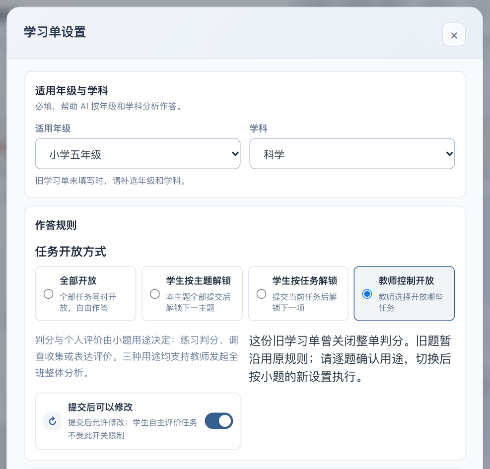
图 4 先选年级和学科，再在「任务开放方式」选择本节课的推进方式。
保存时看按钮的位置。 设置窗口里的「保存设置」用来保存设置。改了题目后，再点编辑器顶栏的「保存」。
04 · 课前准备
把交互网页放进探究空间
入口 · 探究空间 → 添加网页
- 准备要让学生操作的网页，例如「观察叶片形状」。单文件可直接上传 HTML。有图片和其他配套文件时，按页面提示打包上传。
- 填写容易辨认的名称，上传后先预览。试试按钮、拖动和图片显示，也用学生设备打开一次。
- 创建课堂时选择这份网页。课堂中可以按需开启画面采集，从看板查看学生操作情况。
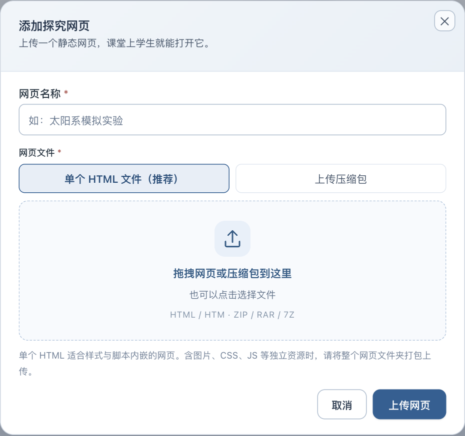
图 5 单个网页文件和带素材的压缩包，在这里选对应的上传方式。
05 · 课前准备
接入 AI 智能体，先选用途
入口 · AI 智能体 → 接入智能体
- 在使用的平台准备好已发布的智能体。回到支点课堂，点「接入智能体」，选择对应平台。
- 让学生提问，选「学伴」，稍后在创建课堂时选用。要看学习单评价和全班分析，选「分析」，然后在学习单「设置」中指定它。学习单 AI 分析目前使用扣子（Coze）的分析智能体。
- 按表单填写平台提供的接入信息。用扣子时，可以在「扣子访问令牌」中统一保存自己的令牌，接入时直接选择。保存后在智能体卡片上点「测试」，再试一两条问答或示例作答。
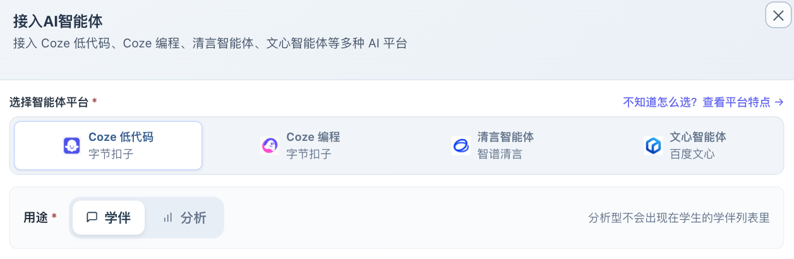
图 6 先选平台，再选「学伴」或「分析」。两项都在接入窗口上方。
准备分析智能体时，可从 AI 智能体页的接入教程进入提示词模板，再按自己学科的需要修改。请妥善保管令牌。
06 · 上课操作
创建课堂，选好学生怎么参加
入口 · 课堂管理 → 创建新课堂
- 填写课名，选好班级。第一次试课可选「标准模式」，学生用自己的姓名进入。
- 如果同组一起做任务，选「分组模式」。想给各组安排不同的学习内容，选「高级模式」，逐组选学习单、网页或学伴。分组前先在班级管理安排成员。按设备使用情况选「小组登录」或「组员登录」。
- 挂上这节课需要的学习模块。例如只做植物观察，就只关联一份学习单。创建后在课堂管理检查课名、班级和互动码。
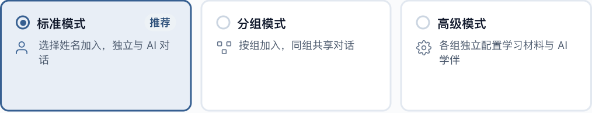
图 7 三种模式的区别在这里看。演示课选的是「标准模式」。
课堂创建后，已关联的学习单不能更换。开课前用预览确认选的是本节课要用的那份。
07 · 上课操作
发互动码，让学生认领身份
- 在「课堂管理」的课堂卡片上点「互动码」展示二维码。也可以进入课堂，点「投屏发码」。
- 学生用设备自带的相机扫码，或在浏览器打开学生入口并输入四位互动码。
- 学生选自己的姓名或小组，点「确认并进入」。看到「今天的学习」后，打开老师指定的模块。
08 · 上课操作
用看板开放任务、查看进度
入口 · 课堂管理 → 进入课堂
- 打开「学习模块」，把现在要用的模块设为「开放」。「暂停」时学生能看到入口，暂时不能用。「隐藏」会收起学生端入口。
- 如果学习单选了「教师控制开放」，点看板右侧「开放进度」，逐项开放或点「开放下一项任务」。收回任务时，已经交的作答仍保留。
- 用「跟随」看学生此刻用的模块，用「固定」让所有格子显示同一个模块。在线与各模块人数都按学生实际使用情况统计。「需关注」和「离线」可帮你快速找到需要查看的学生。
- 需要全班先听讲，用「暂停课堂」。需要停笔但还允许交卷，用「锁定作答」。也可用「全体消息」给全班、小组或个人发提醒。
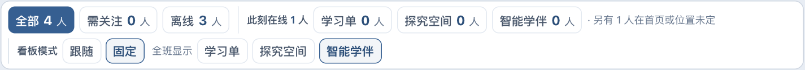
图 10 选「固定」后，仍可查看在线和各模块人数。下一行可选全班格子显示什么。
展开查看 · 探究空间和智能学伴的课堂工具
- 「探究空间」可设置是否采集网页画面。设备卡顿时，可以关闭采集或降低画面更新频率。
- 「智能学伴」可打开对话分析，看大家常问什么。学伴设置可按这节课的需要调整提问、追问建议、中断回答和导出对话等选项。
- 要看某个学生的具体情况，可从他的格子打开作答或对话，也可以单独发消息。
09 · 课后与日常
先看学生怎么答，再决定讲什么
入口 · 课堂看板 → 学习单
- 打开「学习单矩阵」看谁交了、哪项任务还没完成。点学生看整份作答，点任务看全班同一题，点交叉格看该生的这一题。
- 在「按任务查看」里，先看学生原话、作品或选项分布。表达题的文字、手写、照片和录音都可生成观点云。生成班级分析后，可在「观点云」里查看至少两份作答共有的观点，并投屏讲评。
- 需要 AI 帮忙时，在任务的「AI 分析」区生成或更新班级分析。想补齐个别学生尚未完成的评价，使用「补评未评学生」或从名单单独补评。报告出来后对照学生原作，再选例子讲评。
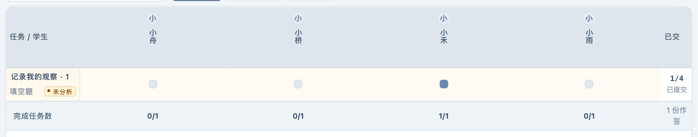
图 13 矩阵横向看学生，纵向看任务。点对应的格子查看这份作答。
展开查看 · 重新分析和清除结果
仅想重做班级报告时，更新班级分析即可。需要清除时，先看清是「全班 AI 评分」「选定学生的 AI 评分」还是「班级分析结果」。这些操作针对当前任务，学生原作保留。使用第三方 AI 分析前，按学校要求处理学生姓名、学号和作品。
10 · 课后与日常
结束课堂，把需要的材料带走
- 回「课堂管理」，在课堂卡片上点「结束课堂」。确认学生交完后再结束，结束后互动码失效。
- 打开「数据管理」，按课堂名称、班级或日期找到记录，在课堂卡片上按需要选导出方式。
- 要离线翻阅本节课，点「下载课堂资料包」。下载并解压后打开「打开课堂记录.html」，查看已保存的学习单和学伴记录。要用 Word 讲评，可点「导出学习单数据」。需要单独整理问答时，选「导出对话数据」。
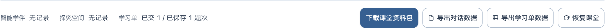
图 14 在记录卡片底部，按需要选择资料包、对话数据或学习单数据。
换电脑、恢复整个系统时，请用下一节的「数据备份与恢复」。
11 · 课后与日常
日常设置、备份和换电脑
设置头像、安全和语音
- 在「设置 → 头像管理」整理学生头像和班级图标。需要查看敏感词提醒、设置提问频率或自动黑屏规则，可进入「安全管理」。
- 在「设置 → 语音设置」里，按需要切换「学生录音」「语音朗读」「录音转文字」。配置朗读时选已保存的扣子令牌和音色，试听后点「保存设置」。转写另选识别服务令牌并保存。
- 开启后，使用朗读和点击转文字可能消耗扣子账号积分。已经保存的转写结果可以直接查看。
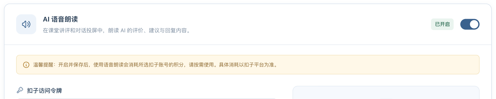
图 15 开启语音朗读后，在提示条下方选择令牌，再选择音色。
备份与迁移
- 在「数据管理 → 数据备份与恢复」点「立即备份」，再从列表下载备份文件。
- 在新电脑安装好支点课堂，点「上传备份」，选中刚下载的文件，在列表找到它并点「恢复」。恢复会以所选备份替换当前数据，系统会先保存一份恢复前备份。
- 恢复后检查班级、学习单、智能体和历史记录。平时可在「仪表盘」看运行和存储情况，在「设置 → 关于」查看版本与更新。升级前先备份。
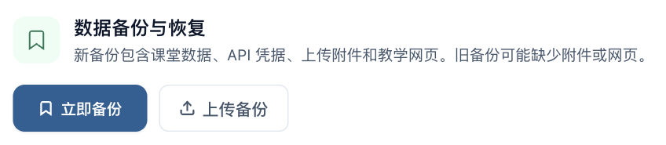
图 16 旧电脑点「立即备份」。换到新电脑后，从「上传备份」导入。
完整备份含学生记录和接入凭据，请保存在妥善的位置。「系统初始化」会清空业务数据，只有确实需要重新开始时才使用。
12 · 课后与日常
上课时遇到问题，先查这几处
- 扫码后打不开
- 确认两台设备能在同一校园网络互访，再看教师端「局域网访问」是否开放。二维码若可切换网络地址，选择学生设备能访问的那个。
- 能进入，任务却点不动
- 依次检查课堂是否暂停、模块是否开放、学习单是否按进度解锁。教师控制开放时，再看右侧「开放进度」。
- 学生找不到姓名或小组
- 检查课堂选的班级和参与模式，再去班级管理核对名单、分组和身份是否已被占用。
- AI 没回复或无法分析
- 先看智能体连接和令牌是否有效。学习单分析还要检查「设置」是否指定扣子的分析型智能体。先用一份示例作答试一下。
- 改了题目，回去没看到
- 回编辑器检查顶栏是否已保存，打开预览核对内容，再确认课堂关联的是哪份学习单。
回到指南顶部 ↑